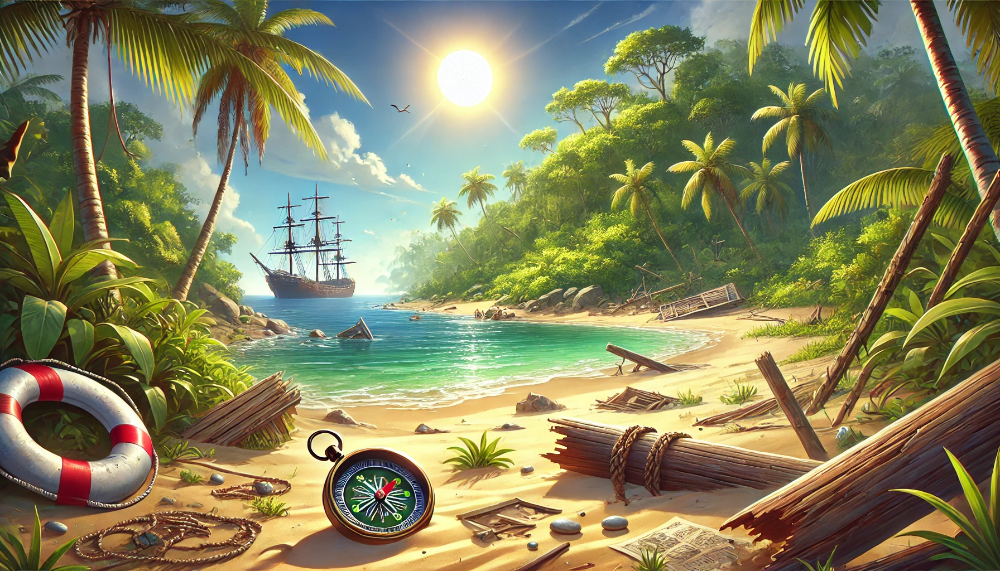

Probudíš se sám na neznámém ostrově, obklopený džunglí a zvuky, které neznáš. Nepamatuješ si, jak ses sem dostal. V kapse máš jen rozbitý kompas a malý nůž. Brzy si uvědomíš, že nejsi sám – na ostrově se pohybují divoká zvířata a možná i jiní přeživší. Tvým cílem je přežít do západu slunce, kdy na horizontu uvidíš loď, která může být tvou jedinou šancí na záchranu.